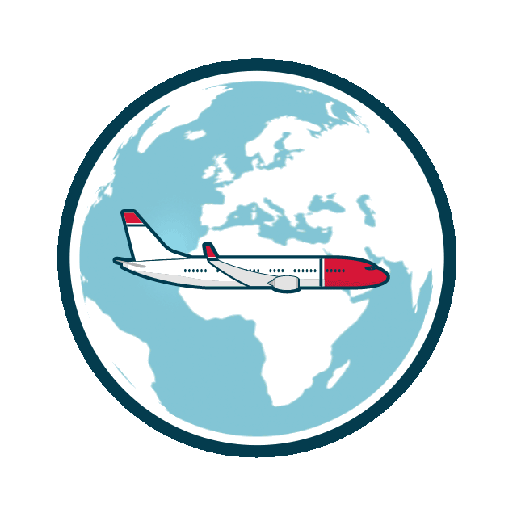

I am a master student in Operations and Supply Chain Management at IESEG School of Management.
I am passionate about cinema 🎬, art 🎨, rugby 🏉 and travels 🌍.
I would like to work as a film and television producer or in the management of cultural projects!
I am currently studying Operations and Supply Chain Management at IESEG School of Management in Lille, France at a master level. I also had the chance to do an exchange semester at Sogang University in Seoul, South Korea, in 2019.
Do not hesitate to click on the logos below to discover my universities!
I have been president of my student association, the IESEG International Club, an association of 23 persons in charge of the orientation week and the semester's events for foreign exchange students on the IESEG Lille campus.
I have worked 3 months as Sales Advisor at Printemps Lille for the stand L'Endroit (Kenzo, Givenchy, Balmain, Versace, ...) between December 2018 and February 2019.
I have also done a 2-month internship at Groupe Bayard in Summer 2018 in the marketing department.
Do not hesitate to click on the logos below to discover my workplaces!
I followed the option Audiovisual Cinema for three years in High School and I would like to direct my career towards this field. I particularly like the films of Wes Anderson, Quentin Tarantino, Christopher Nolan, Hayao Miyazaki or Guy Ritchie.
Having grown up in a family where culture is one of the pillars of education, I have developed a strong taste for art, especially modern and contemporary art. My favorite artists are Richard Mosse, Jean-Michel Basquiat, David Hockney, or Christian Boltanski.
I have always been a huge rugby fan and I had the opportunity to play rugby for three years in high school at the Lille Métropole Rugby club as a winger. I am moreover a big Stade Toulousain fan.
I had the chance to travel a lot in my life and I thus visited 4 of the 5 continents. I also spent an exchange semester in South Korea, two months immersion in Australia at the Melbourne Grammar School, and multiple language exchanges in Great-Britain, and in Germany.
